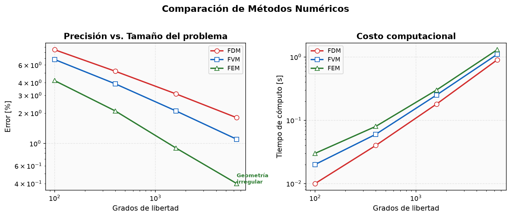
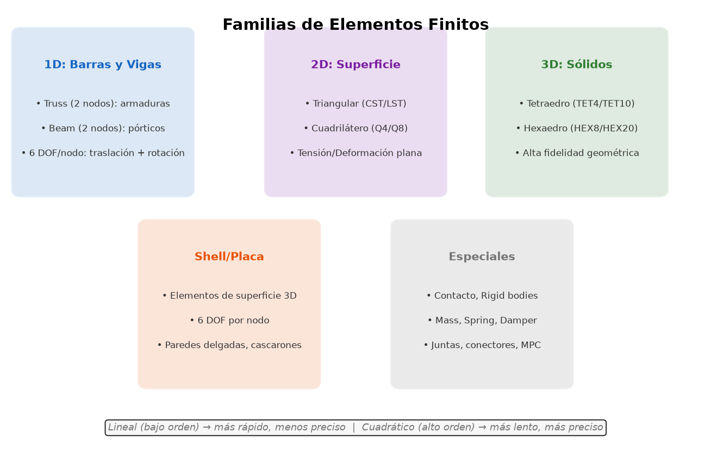
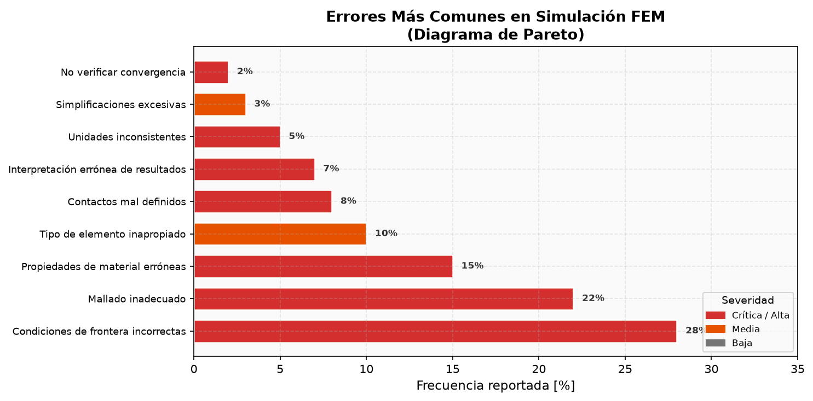

Métodos numéricos y la idea del FEM
Agenda de la sesión
Teoría
¿Por qué métodos numéricos? Las EDP no tienen solución analítica para geometrías reales. FDM, FVM y FEM.
La idea del FEM
Discretización, funciones de forma, ensamblaje y el sistema global \( [K]\{u\}=\{F\} \).
Práctica
Barra de acero en tracción: σ = 50 MPa y δ ≈ 0.048 mm. Del enunciado al resultado verificado.
Taller 2
Barra escalonada: resortes en serie y verificación analítica de cada tramo.
¿Por qué necesitamos métodos numéricos?
Las ecuaciones gobernantes de la física son EDP que solo tienen solución analítica para geometrías y fronteras muy simples.
Funciona si…
Geometrías simples: viga, placa, esfera. Existe una fórmula cerrada exacta.
Pieza de ingeniería
Agujeros, chaflanes, cambios de sección, cargas combinadas: la fórmula cerrada no existe.
Aproximamos
Discretizar el dominio y resolver un sistema algebraico con cómputo.
Diferencias Finitas (FDM)
Reemplazar las derivadas por diferencias entre puntos de una malla regular.
Fortalezas
Simple de entender e implementar. Muy eficiente en dominios rectangulares.
Debilidades
Requiere malla estructurada (regular); geometrías complejas y fronteras curvas son problemáticas.
¿Cuándo?
Transferencia de calor 1D/2D simple, difusión, CFD en dominios regulares.
Volúmenes Finitos (FVM)
Dividir el dominio en volúmenes de control y aplicar leyes de conservación (masa, momento, energía) en cada uno.
Fortalezas
Conservación garantizada por construcción. Dominante en CFD comercial (Fluent, CFX, OpenFOAM).
Debilidades
Mayor complejidad de implementación; precisión en geometrías irregulares exige mallas no estructuradas.
¿Cuándo?
Mecánica de fluidos computacional (CFD) y transferencia de calor con convección.
Elementos Finitos (FEM)
Dividir el dominio en elementos finitos donde la solución se aproxima con funciones de forma simples; ensamblar todo en un sistema global.
Fortalezas
Geometrías arbitrarias con facilidad, base matemática rigurosa, versátil: estructuras, calor, electromagnetismo.
Debilidades
Más costoso que FDM en problemas simples; exige entender tipos de elemento, funciones de forma e integración numérica.
¿Cuándo?
Análisis estructural — el estándar de la industria — y problemas con geometría compleja.
¿Qué método elegir?
| Criterio | FDM | FVM | FEM |
|---|---|---|---|
| Geometría compleja | ✕ | ||
| Estructuras | ✕ | ✕ | |
| Fluidos (CFD) | |||
| Conservación exacta | ✕ | ||
| Facilidad de aprendizaje | |||
| Rigor matemático |

FEM en 4 pasos: discretizar para resolver
- Discretizar — dividir el dominio en elementos finitos conectados por nodos
- Formulación elemental — en cada elemento, aproximar la solución con funciones de forma: \( u(x) \approx \sum_i N_i(x)\,u_i \)
- Ensamblaje — combinar las matrices elementales en el sistema global \( [K]\{u\} = \{F\} \)
- Solución — resolver el sistema para los desplazamientos nodales \( \{u\} \); luego derivar deformaciones y esfuerzos
Funciones de forma \( N_i(x) \)
¿Qué hace Ni(x)?
Polinomio local que vale 1 en el nodo i y 0 en los demás. Convierte el continuo u(x) en un número finito de incógnitas ui: los desplazamientos nodales.
¿Por qué importa?
Determina el orden del elemento: un TET4 (lineal) es más rígido que un TET10 (cuadrático). Usted no la elige a mano: el solver la usa internamente.

El sistema global: \( [K]\{u\} = \{F\} \)
\( [K] \) · Rigidez global
Matriz N×N que condensa material, geometría y malla. Simétrica y definida positiva en elasticidad lineal.
\( \{u\} \) · Incógnitas
Vector de desplazamientos nodales. Es lo que el solver calcula.
\( \{F\} \) · Fuerzas
Vector de fuerzas nodales equivalentes: cargas aplicadas y reacciones en los apoyos.
El mapa del software: qué usa cada mundo
| Software | Método | Dominio típico |
|---|---|---|
| ANSYS, Abaqus, SolidWorks Simulation | FEM | Estructuras, multifísica, no linealidades |
| Fluent, CFX, OpenFOAM | FVM | CFD: fluidos, convección, combustión |
| Códigos académicos / propios | FDM | Calor y difusión en dominios regulares |
| FreeCAD FEM + CalculiX | FEM | Este curso: aprendizaje y geometrías moderadas |
Barra en tracción — el problema
Enunciado
- · Barra de acero: 200 × 20 × 10 mm (A = 200 mm²)
- · Empotrada en un extremo
- · Carga axial P = 10 kN (10000 N) en el otro
- · Acero: E = 210000 MPa, ν = 0.3
Pregunta de diseño
¿Cuánto se alarga la barra y cuál es el esfuerzo?
Primero a mano (fórmulas de tracción simple), luego en FreeCAD, y comparamos.
Solución analítica: la referencia
Esfuerzo
σ ≈ 50 MPa
Alargamiento
δ ≈ 0.048 mm
Rigidez axial
k = 210000 N/mm
Plan de trabajo en FreeCAD FEM
- Geometría — Part → Box: 200 × 20 × 10 mm
- Análisis — FEM → New analysis; material acero (E=210000 MPa, ν=0.3)
- Condiciones — Constraint fixed en una cara; Constraint force de 10000 N en la opuesta
- Malla — Gmsh, tamaño de elemento 5 mm
- Solver — CalculiX: escribir input, ejecutar
- Resultados — pestañas Displacement y Stress; comparar con σ = 50 MPa y δ ≈ 0.048 mm
Los errores que tocan hoy

Taller 2 — Barra escalonada: resortes en serie
Enunciado
- Dos tramos en serie: 100×20×10 mm (A₁=200 mm²) y 100×20×20 mm (A₂=400 mm²)
- Empotrada en un extremo, P = 10 kN en el otro
- Predecir δ total con resortes en serie: \( k_{\text{eq}} = \frac{k_1\,k_2}{k_1 + k_2} \)
Valores de referencia
- \( k_1 = \frac{EA_1}{L_1} = 420000\ \text{N/mm} \)
- \( k_2 = \frac{EA_2}{L_2} = 840000\ \text{N/mm} \)
- \( k_{\text{eq}} = 280000\ \text{N/mm} \rightarrow \delta \approx 0.036\ \text{mm} \)
- \( \sigma_1 = \frac{P}{A_1} = 50\ \text{MPa} \) · \( \sigma_2 = \frac{P}{A_2} = 25\ \text{MPa} \)
Lo que debe quedar hoy
Discretizar para resolver
Las EDP no se resuelven para piezas reales: FEM las convierte en un sistema algebraico.
Los 4 pasos
Discretización → formulación elemental → ensamblaje → solución \( [K]\{u\}=\{F\} \).
Verificar siempre
La mano primero: σ = 50 MPa y δ ≈ 0.048 mm. El FEM debe reproducirlos.
Hacia el pre-procesamiento
Del tiempo real
El pre-procesamiento (geometría, material, malla) consume la mayor parte de una simulación: ahí se decide su calidad.
Con agujero
Concentración de esfuerzos: el primer problema donde la mano no basta y el FEM brilla.
Para la sesión 3
Leer guía cap. 4.2 (geometría, material, mallado) y cap. 5. Entregar el Taller 2.
Recursos de la sesión
Guía de referencia
- Cap. 3 — Métodos numéricos: FDM, FVM, FEM
- Cap. 3.5 — ¿Qué método elegir? (tabla comparativa)
- Cap. 4.1 — La idea central: discretizar para resolver
- Cap. 4.2.1 / 4.2.3 — St. Venant y reglas de mallado
- Cap. 5 — Errores 2 (mallado) y 4 (tipo de elemento)
Archivos del curso
- ejercicio_paso_a_paso.html — barra en tracción
- taller.html — barra escalonada + rúbrica
- video/guion.md — guion del video asíncrono
- Notebooks guía: 02_metodos_numericos.ipynb
Figuras 3–5: Guía Práctica de Simulación en Ingeniería, caps. 3 y 4.2.3 (assets/figuras).